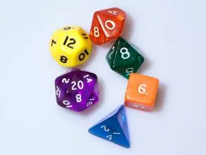

O que é um dado ?
Os dados são pequenos objetos de forma poliédrica inscritos com números específicos. O molde mais clássico é um cubo com números de um a seis gravados nele.
Existem também dados de dupla face (representados por moedas), dados de três faces Equivalente a um dado clássico de seis faces,
mas com apenas três números, cada um repetido duas vezes),
Quatro lados, oito lados, dez lados, doze lados, vinte lados, usados principalmente para rpg e assim por diante.
Os primeiros dados podem ter sido feitos de partes de animais,
como tornozelos de guindaste, Sua forma é próxima a um tetraedro. Marfim, osso, madeira, metal e pedra
Um material amplamente utilizado, porém, com o advento do plástico, Este material tem aceitação quase unânime devido à sua facilidade de produção e variação.
Onde eram encontrados
Dados poliédricos podem ser encontrados na maioria das lojas de RPG. No começo dos jogos de RPG, a maioria dos dados não tinha números sorteados,
e os jogadores se dedicavam a desenhar seus próprios números. Alguns dados de 20 lados desta época foram numerados duas vezes de 0 a 9;
metade dos números tiveram que ser pintados em cores contrastantes para implicar que eram as faces dos números com um valor "mais alto".
Estes também são usados como moldes duplos de dez lados, ignorando a diferença cromática.

Dado no RPG
Grande parte dos sistemas de RPG usa dados para testar as habilidades dos personagens.
Alguns, como GURPS e RPGQuest, usam dados comuns de seis faces.
Outros como o Dungeons & Dragons usam dados diferenciados: além dos tradicionais dados de 6 lados,
também são usados dados de 4 lados, 8 lados, 10 lados, 12 lados, 20 lados e 100 lados dependendo do teste de habilidade requisitado.
Cada sistema tem suas próprias regras para determinar o que ocorre no jogo baseado no resultado dos dados.
Inicialmente, quanto mais difícil a tarefa, menor será a chance do resultado dos dados serem satisfatórios.
A maioria dos sistemas possuem regras específicas para um grande número de ações que um personagem poderia fazer,
mas cabe sempre ao mestre decidir se a jogada é necessária ou não.
Mecânica Básica
Para resolver ações no sistema d20, os jogadores rolam dados de 20 faces e adicionam modificadores baseados nas habilidades naturais do personagem.
São eles: Força, Agilidade, Constituição, Inteligência, Sabedoria e Carisma, bem como a proficiência do personagem em vários aspectos, como combate.
Se o resultado for maior ou igual ao número desejado (chamado de nível de dificuldade ou CD), a operação foi bem-sucedida. Isso é chamado de mecânica fundamental.
Este sistema é sempre usado para todas as resoluções de movimento no sistema d20. Nos jogos anteriores da família D&D.
Grid de batalha
Além dos dados, o grid é um importante complemento para uma campanha de rpg, uma matriz ou Grid de Batalha, é um plano feito de qualquer material que possa ser ilustrado um quadriculado.
Serve para conduzirmos os combates nos rpg's e facilitar a visualização da localização e distancia dos personagens e inimigos na hora do combate.
Como geralmente a distancia que pode ser percorrida pelos personagens é limitada por turno, um grid auxilia o jogador a decidir o que fazer, por exemplo,
se os inimigos estão no alcance do ataque dele, como é o terreno naquela situação, a qual distancia se encontra o seu aliado mais próximo, etc.